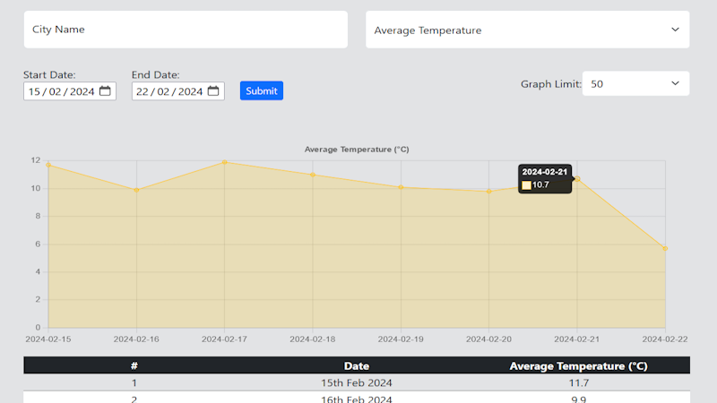
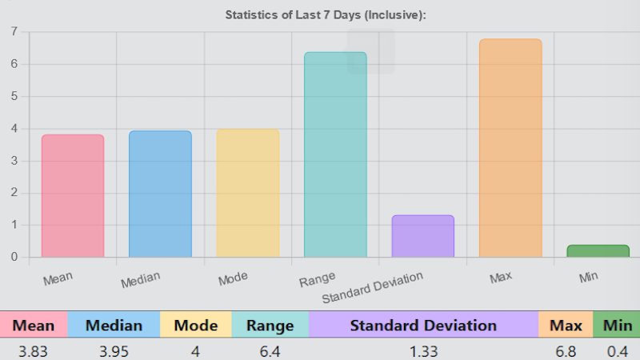
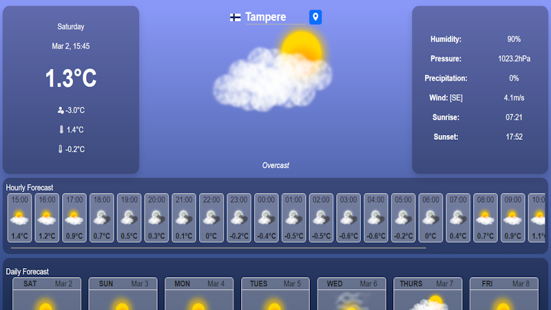

Historical Data
Here, users can explore historical daily weather data spanning a range from 1940 to as recent as five days ago, providing a comprehensive understanding of past weather conditions. This intuitive interface allows users to select specific types of weather data they wish to explore, such as temperature, precipitation, wind speed, and more. The graph feature offers a visual representation of the selected data, limited to a maximum of 2500 data points for optimal performance. It is recommended to use a smaller range of dates for better visualisation. Meanwhile, the accompanying table loads all available data in groups of 500, ensuring accessibility and ease of analysis. Whether you're a researcher, planner, or weather enthusiast, this dashboard provides valuable insights into historical weather patterns, empowering informed decision-making.
Recent Data
Here, users can stay updated with recent hourly weather data from today up to a month ago. Additionally, the user can view statistics of the last 7 days, including mean, mode, median, range, standard deviation, maximum, and minimum values for key weather metrics such as temperature, wind speed, and humidity. This dashboard provides insights into changes over specific timeframes, ensuring users are well-informed about recent weather trends. The graph feature enables the user to have a visual representation of recent weather trends. Alongside the graph, users can access detailed numerical data in the table format, enabling further analysis and comparison between different time periods.
Forecast Data App
Here, users can instantly access the current weather conditions for any location they desire, depicted alongside custom-made weather images displayed in animation to liven up the display. Explore the forecast section to plan ahead with detailed predictions for the upcoming days, featuring static representations of stunning weather images for ease of reference. Dive deeper into the forecast with the interactive graph, providing hour-by-hour temperature trends and highlighting the day's maximum and minimum temperatures with precision.
